What is AngularJS?
AngularJS, commonly referred to as Angular, is an open-source web application framework maintained by Google and a community of individual developers and corporations to address many of the challenges encountered in developing single-page applications. Its goal is to simplify both development and testing of such applications by providing a framework for client-side model–view–controller (MVC) architecture, along with components commonly used in rich internet applications.-Wikipedia

Why AngularJS?
HTML is great for declaring static documents, but it falters when we try to use it for declaring dynamic views in web-applications. AngularJS lets you extend HTML vocabulary for your application. The resulting environment is extraordinarily expressive, readable, and quick to develop.-AngularJS.org
Where do I begin?
For this project, we're going to create a simple application using AngularJS. This app will pull JSON (JavaScript Object Notation) into a table that allows sorting and filtering. We'll be using ngTable in this app since it's simple and lightweight enough to get running in nearly no time.
Step 1: Add AngularJS library
The fastest way to get started with Angular is to point your html script tag to a Google CDN (content delivery network) URL. You can get this at Google's hosted libraries site.
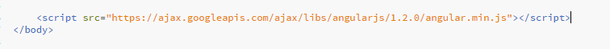
*Note: I've included the script tag right before my closing body tag for performance. I encourage you to read on the subject to decide where you would prefer to put yours.
Step 2: Add ngTable script and CSS
Add the script and CSS for ngTable. You can get this from their
website in any of their examples.
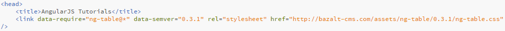
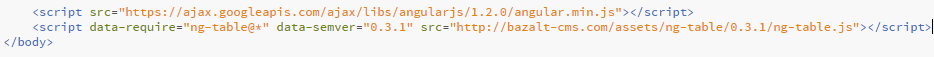
Step 3: Add JavaScript containing your AngularJS app
Add a JavaScript file in your directory which will contain your AngularJS, and reference this on your HTML page.
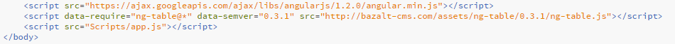
Step 4: Declare the app module
Declare the app module in your javascript file, and point to the app module in an element of your HTML that will be containing the AngularJS app.
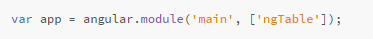
*Note: In order to use ngTable, we must also include it in our app module.
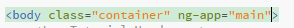
*Note: You have to include the ng-app attribute to the root HTML element of your AngularJS app. You can either add it to the html element, or the body element like the example shown above.
Step 5: Initialize controller
AngularJS applications mainly rely on controllers to control the flow of data in the application. We will need to add a controller function in our JavaScript file, and point to the controller with the part of our HTML that requires it.
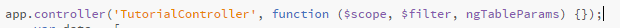
*Note: The three parameters we're passing into our controller function here will help with the sorting and filtering later.
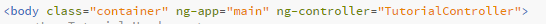
Step 6: Initialize data
For this project, we'll be passing in a JSON array of objects. We will initialize a data variable and set it equal to this JSON array inside of our controller function.
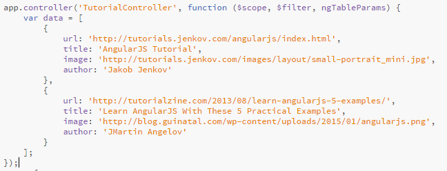
Step 7: Set-up sorting and filtering
Now you need to set up your parameters for sorting and filtering inside of your JavaScript file. There are comments on the different sections to give you an idea of what it's doing.
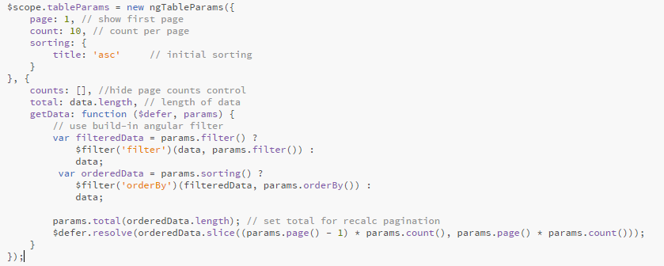
*Note: In order to do sorting and filtering, you can set a filteredData variable which will filter your data. From here, you then set an orderedData variable which will be used to sort the filteredData variable.
Step 8: Add your table
Now add your table tags with your table row tags and table data tags inside.
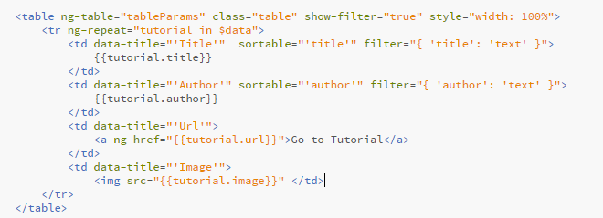*Note: You can find more information for a lot of the attributes listed here on AngularJS's website. The only ones you may not be able to find are ng-table, show-filter, sortable, and filter.
- ng-Table: The value of this attribute points to a scope property inside of your JavaScript file, and represents an instance of your ngTableParams.
- show-filter: This attribute on our table tag will show textboxes on certain columns for us to be able to filter.
- sortable: Add this attribute to the columns we want to sort. In our example, we set this attribute equal to "'title'" for our title column. Make sure to include the double quotes outside of the single quotes, and that the column you're trying to sort matches the property name of your data.
- filter: Add this attribute to the columns we want to filter. For title, we have "{ 'title': 'text' }", where title is the name of the property.